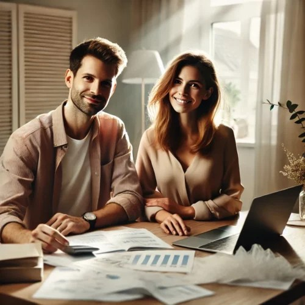
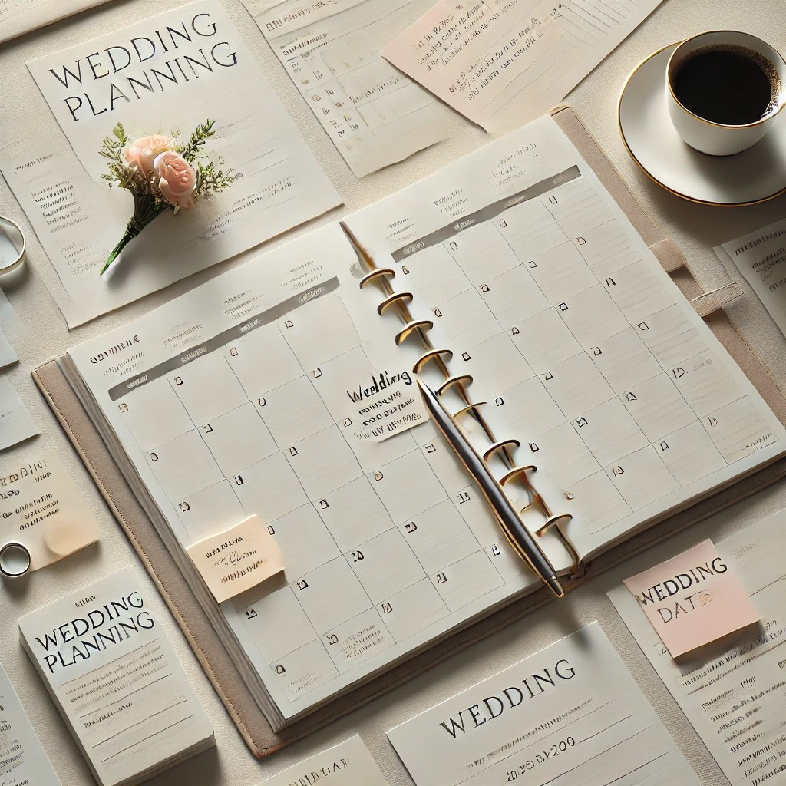
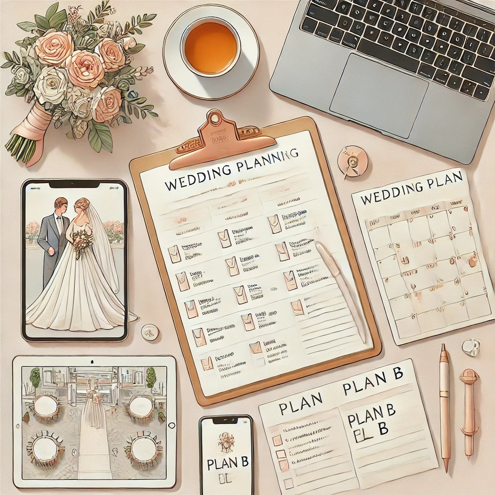

Un guide pratique pour organiser le mariage de vos rêves. Tendances mariage 2026 Mariages plus intimistes et expérientiels Les mariages intimistes (souvent moins de 60 invités) continuent de monter, a
Un guide pratique pour organiser le mariage de vos rêves.
Mise à jour 2026
Article initialement publié pour 2025, mis à jour pour 2026 avec les dernières tendances et conseils de planification en Provence.

Tendances mariage 2026
Mariages plus intimistes et expérientiels
Les mariages intimistes (souvent moins de 60 invités) continuent de monter, avec plus de budget par personne, des lieux de caractère et une attention forte à l’expérience globale des invités.
Montée en puissance du mariage écoresponsable
Les mariages durables ne sont plus une niche mais une vraie norme aspirée par beaucoup de couples : lieux engagés, fleurs locales et de saison, menus végétariens ou à dominante végétale, réduction drastique du jetable et de la déco éphémère.
Personnalisation poussée et “non‑wedding”
Les couples cherchent des mariages qui ne ressemblent à aucun autre : thèmes très personnels, scénographie inspirée de leur histoire, cérémonies sur-mesure, codes classiques revisités.
Expériences et animations immersives
Les tendances 2026 insistent sur l’expérience invitée : bars mobiles (cocktails, glaces, café de spécialité), animations immersives, audio guestbook, scénographies de tables très travaillées.
Etapes essentielles
Planifier un mariage est un projet excitant, mais aussi une grande responsabilité. Entre les choix de prestataires, l’organisation des détails et la gestion du budget, il y a beaucoup à faire pour s’assurer que le jour J se passe à la perfection. En 2026, les futurs mariés sont de plus en plus soucieux de l’environnement, de la durabilité et de l’éthique, mais l’organisation reste essentiellement la même. Ce guide vous présente les étapes essentielles pour planifier un mariage réussi, tout en tenant compte des tendances actuelles.
1. Définir vos priorités et votre vision
Avant de commencer à planifier quoi que ce soit, il est essentiel de définir ce que vous attendez de votre mariage. Prenez le temps de discuter de vos priorités avec votre partenaire : souhaitez-vous un mariage intime ou une grande célébration ? Quelles sont les valeurs que vous souhaitez refléter dans votre mariage (écologie, éthique, simplicité) ? Cela vous aidera à établir une vision claire et à orienter vos choix tout au long de la planification.
Avec My Green Event, vous aurez un petit questionnaire à remplir chacun de votre côté me permettant de savoir ce qui compte réellement pour vous !
2. Établir un budget réaliste

L’une des premières étapes essentielles pour une planification réussie est de définir un budget. Cela peut sembler une tâche ardue, mais c’est crucial pour éviter les mauvaises surprises. Prenez en compte tous les aspects du mariage : lieu de réception, restauration, décoration, musique, tenues, fleurs, photographe, etc. Incluez également une marge pour les imprévus. En 2026, de plus en plus de couples optent pour un mariage plus simple, ce qui peut permettre de réduire certains coûts.
Et n’oubliez pas que le principal levier pour réduire le budget reste… de réduire le nombre d’invités !
3. Choisir la date et le lieu de mariage
Le choix de la date et du lieu de votre mariage est primordial. Certaines dates peuvent être plus populaires que d’autres, il est donc préférable de réserver tôt. Si vous avez des invités venant de loin, tenez compte de la saison et de la météo.
Le lieu de réception détermine également une grande partie de l’ambiance de votre mariage. Assurez-vous qu’il soit bien adapté à votre vision (intérieur ou extérieur, taille, ambiance) et qu’il offre les services nécessaires.
Astuce petit budget : privilégiez une date en semaine et en basse-saison pour faire baisser le prix de la location du lieu de réception.
4. Sélectionner les prestataires avec soin
Les prestataires jouent un rôle clé dans la réussite de votre mariage. Cela inclut le traiteur, le photographe, le vidéaste, le fleuriste, le DJ, etc. Pour un mariage réussi, choisissez des prestataires qui comprennent votre vision et qui partagent vos valeurs. Par exemple, si l’éthique et la durabilité sont importantes pour vous, optez pour un traiteur végétarien ou un fleuriste utilisant des fleurs locales et de saison.
En 2026, il est également important de vérifier si les prestataires sont flexibles et ouverts à des demandes personnalisées, comme des repas adaptés à des régimes alimentaires spécifiques ou des décorations recyclées.
5. Créer un planning détaillé et un calendrier
Un planning détaillé est essentiel pour ne rien oublier et garantir que tout se passe comme prévu. Commencez par établir un calendrier avec toutes les étapes importantes : la recherche du lieu, la réservation des prestataires, l’achat des tenues, la création des invitations, etc. Cela vous aidera à avancer étape par étape sans être submergé par la quantité de tâches à accomplir.
En 2026, de nombreux couples optent pour des outils numériques pour gérer la planification de leur mariage. Des applications comme Google Calendar, Trello ou des plateformes spécialisées permettent de suivre les tâches à faire, d’organiser les échéances et de partager facilement des informations avec les prestataires et les invités.
6. Envoyer les invitations et gérer les invités
L’envoi des invitations est une étape clé dans la planification de votre mariage. Aujourd’hui, de nombreux couples optent pour des invitations numériques ou des sites web de mariage, qui permettent d’inclure des informations pratiques (horaire, lieu, code vestimentaire) et de gérer les confirmations de présence en ligne. Cela facilite l’organisation, surtout pour les invités venant de loin.
Assurez-vous de donner à vos invités suffisamment de temps pour répondre à l’invitation, surtout si vous avez besoin de confirmer les détails avec les prestataires. Envoyer des invitations bien à l’avance (comme un Save The Date) vous permettra de gérer facilement les imprévus et les ajustements de dernière minute.
7. Penser à la décoration et à l’ambiance
La décoration de votre mariage contribue grandement à l’ambiance générale. En 2026, de plus en plus de couples optent pour des décorations durables et minimalistes, privilégiant des éléments naturels ou réutilisables. Des fleurs en pot, des guirlandes en tissu, des objets vintage ou recyclés peuvent créer un décor magnifique tout en étant respectueux de l’environnement.
Réfléchissez également à l’ambiance musicale et à l’éclairage.
8. Organiser les détails logistiques et prévoir un plan B

Il est important de penser aux détails logistiques du mariage, comme la gestion des transports, le stationnement et l’accessibilité du lieu de réception. De plus en 2026, de nombreux couples optent pour des solutions de transport collectif ou des options de covoiturage pour réduire l’empreinte carbone de l’événement.
Aussi, n’oubliez pas de prévoir un plan B en cas d’imprévus (vent ou pluie), surtout si vous avez opté pour un mariage en plein air. Avoir une solution de repli pour la météo, les déplacements ou d’autres éléments peut vous éviter du stress à la dernière minute.
9. Prévoir les activités et animations
Les activités et animations sont un excellent moyen de rendre votre mariage unique et divertissant. De nombreux couples choisissent des animations interactives, comme un photobooth, des jeux en plein air ou des ateliers créatifs. En 2026, les activités éco-responsables gagnent en popularité, telles que des ateliers zéro déchet, des photobooths avec des accessoires réutilisables ou des sessions de danse avec des musiques locales.
Cela ajoutera une touche originale et agréable à votre mariage tout en réduisant votre impact écologique.
Conclusion : une planification soignée pour un mariage inoubliable
Planifier un mariage en 2026 nécessite une organisation minutieuse et une réflexion sur des aspects plus durables et responsables. En suivant ces étapes, vous pourrez organiser un mariage à la fois mémorable, respectueux de vos valeurs et bien organisé. Une planification réussie vous permettra de profiter de chaque moment sans stress et de faire de votre mariage une véritable célébration de l’amour et de l’environnement.
Et si vous êtes perdus, n’hésitez-pas à me contacter, je suis là pour vous guider et pour que nous trouvions la solution adaptée à vos besoins !